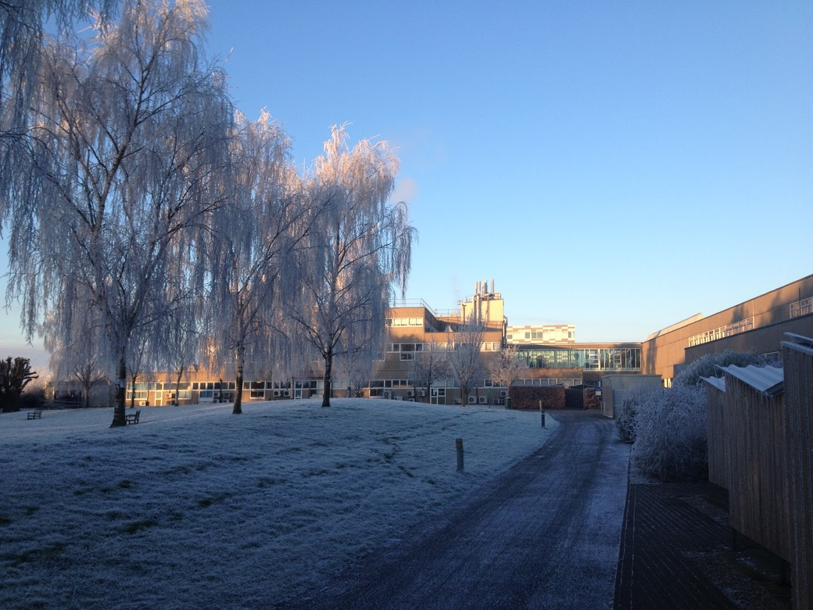
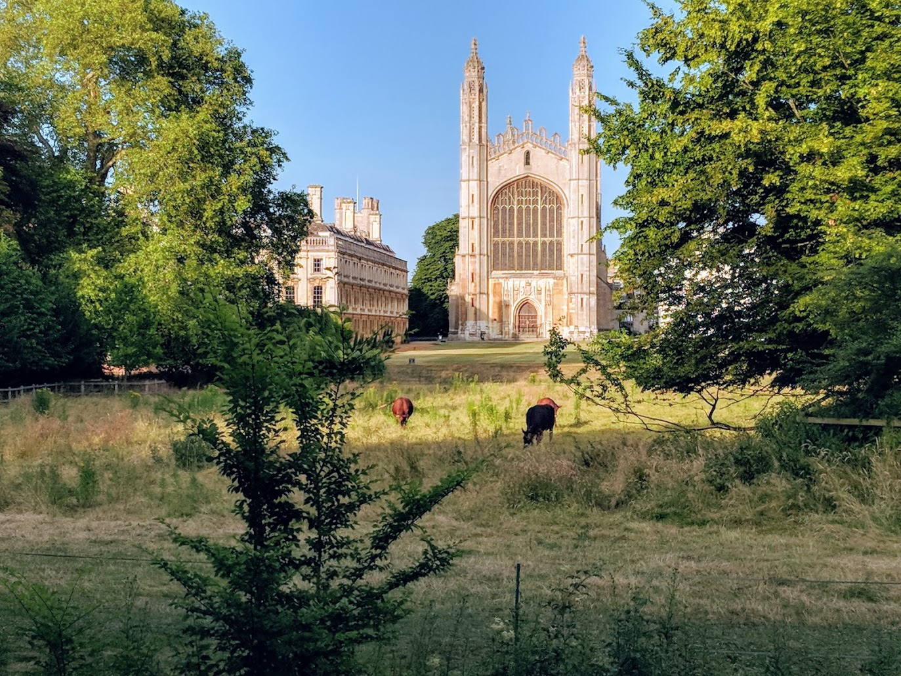
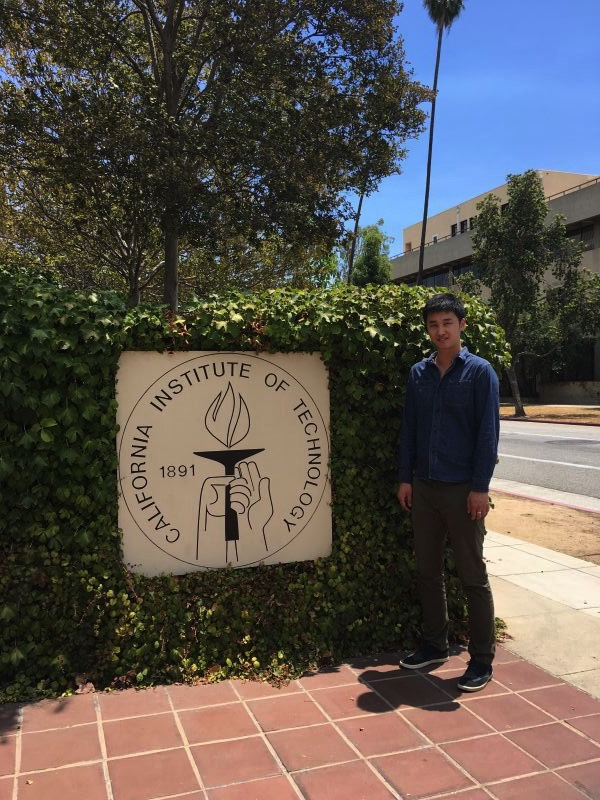
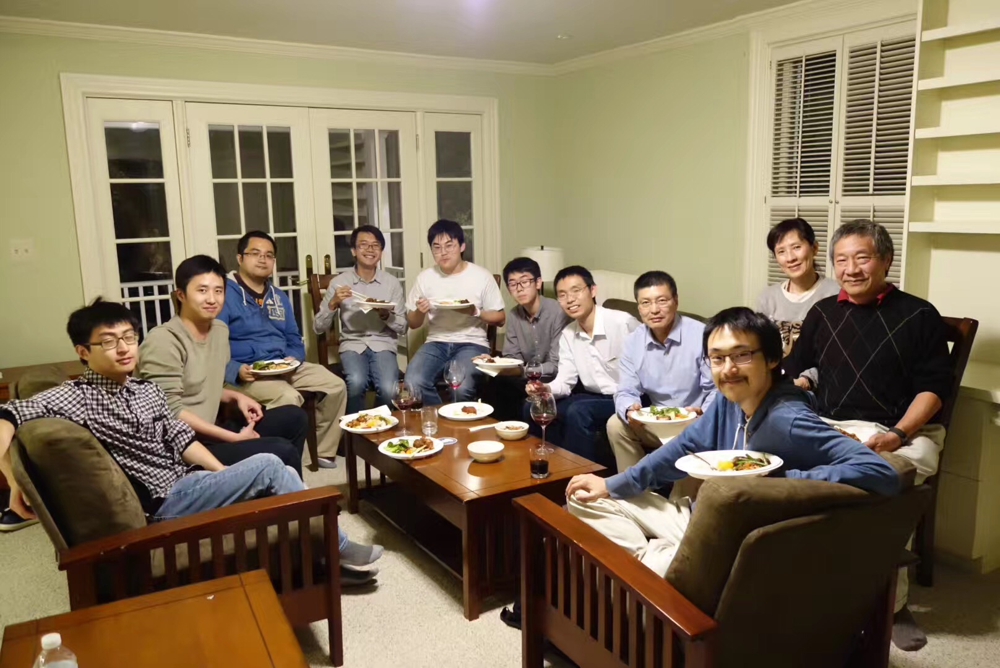

I grew up in Nanjing (南京), a city on the banks of the Yangtze River with recorded history dating back to at least 500 BC. At the age of 15, I received an SM1 Scholarship from the Ministry of Education of Singapore. The scholarship covered the tuition and living expenses while I studied for A-levels at Victoria Junior College (high school equivalent) in Singapore.
Although I had always been passionate about science, my interest in astronomy truly deepened after joining the Astronomy Club at Victoria Junior College. We often embarked on all-night Messier marathons with our 8-inch Schmidt–Cassegrain telescope. We also studied astronomy and physics together on a weekly basis and participated in astronomy-related competitions.
I went to the University of Cambridge in UK as an undergrad in 2010. Thanks to the broad curriculum of the Natural Sciences Tripos, I also discovered interests in Geology and Evolutionary Biology. I vividly remember that we had the chance to examine one of ~100 Martian meteorites during a Geology class. The Martian origin of these meteorites was established by comparing the in-situ measurement from Mars rovers and the elemental and isotopic ratio of the minerals and gas inclusions in these meteorites. During another class in my sophomore year, I was absolutely astonished when I first learned about the theory of "vegetation rafting" that the ancestors of New World monkeys had to sail from Africa to South America on a broken tree trunk! How did the trip begin: probably fleeing from predators? And how did the trip complete: by harnessing trade winds? I was fascinated by how something so improbable could happen given the equally unfathomable length of evolutionary timescales.


After receiving my Ph.D in Physics from MIT in 2019, I was awarded the GPS Chair's Fellowship from the Division of Geological and Planetary Sciences at Caltech. Two years later, I was fortunate enough to be awarded a NASA Sagan Fellowship to continue my research at Caltech with Prof. Andrew Howard and Prof. Heather Knutson, and others.
I joined the Institute for Astronomy at the University of Hawai`i as a faculty member in 2024.

